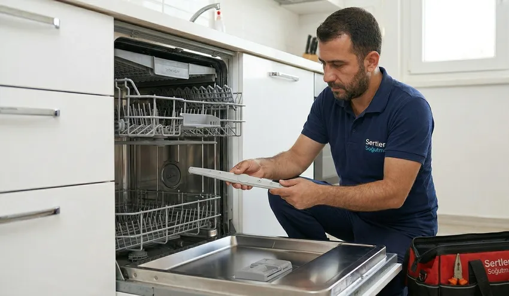

Ariston, ev teknolojilerinde sunduğu estetik, konfor ve yüksek enerji tasarrufu ile dünya genelinde olduğu gibi ülkemizde de sıklıkla tercih edilen saygın markalardandır. Termosifonlardan buzdolaplarına, çamaşır makinelerinden bulaşık makinelerine kadar geniş bir ürün yelpazesine sahiptir.
İtalyan tasarımını gelişmiş mühendislik çözümleriyle birleştiren bu cihazlar, günlük yaşam kalitemizi önemli ölçüde artırır. Ancak sürekli çalışan her elektronik ve mekanik sistemde olduğu gibi Ariston ürünlerinde de zamanla teknik arızalar, parça yıpranmaları veya periyodik bakım ihtiyaçları doğabilir.
Böyle anlarda cihazlarınızı bilinçsiz kişilere teslim etmek yerine uzman bir teknik kadrodan destek almanız büyük bir gerekliliktir. Tarsus Ariston Servisi denildiğinde akla ilk gelen güvenilir adres olan Sertler Soğutma, arızalanan veya bakıma ihtiyaç duyan tüm Ariston cihazlarınıza anında ve kesintisiz çözümler sunmaktadır.
Ev ortamında sıcak su sağlayan bir termosifonun aniden durması veya gıdalarınızı saklayan bir buzdolabının soğutmayı kesmesi yaşam akışınızı olumsuz etkiler. Çamaşır veya bulaşık makinelerinin su sızdırması ya da çalışmayı yarıda bırakması da evinizde büyük aksaklıklara yol açabilir.
İşte bu noktada Sertler Soğutma, profesyonel teknik altyapısı ve tecrübeli ustaları ile hızlıca devreye girmektedir. Tarsus Ariston Servisi arayışlarınızda mobil servis araçlarımızla aynı gün içinde kapınıza kadar ulaşıyor ve yaşadığınız mağduriyeti ortadan kaldırıyoruz.
Ariston markalı cihazların elektronik kart yapıları, sensör dizilimleri ve motor teknolojileri kendine özgü bir hassasiyete sahiptir. Yanlış yapılan müdahaleler cihazın çalışma dengesini bozabileceği gibi daha yüksek maliyetli arızalara da zemin hazırlayabilir.
Sertler Soğutma bünyesinde hizmet veren teknik personellerimiz, Ariston cihazlarının tüm serilerine, teknik şemalarına ve çalışma prensiplerine tam anlamıyla hakimdir. Tarsus Ariston Servisi uzmanlarımız, gelişmiş arıza tespit cihazları kullanarak sorunun kaynağını noktasal olarak belirler ve en doğru tamir metodunu uygular.
Müşteri memnuniyetini ve güvenilirlik ilkelerini her zaman ön planda tutan Sertler Soğutma, Tarsus genelinde kalitenin simgesi haline gelmiştir. Ariston cihazlarınızın ilk günkü çalışma verimliliğine ve performansına dönmesi için titiz bir çalışma yürütüyoruz.
Tamir ve bakım süreçlerimizde tam bir şeffaflık sergileyerek tarafınızı her aşamada detaylı şekilde bilgilendiriyoruz. Onayınız alınmadan hiçbir işlem başlatılmaz, böylece süreç boyunca tam bir güven ortamı sağlanır.
Tarsus Ariston Servisi hizmetlerimizde sadece anlık arızaları gidermekle kalmıyor, cihazın genel durumunu gözden geçirerek muhtemel sorunların da önüne geçiyoruz. Sertler Soğutma, cihazlarınızın kullanım ömrünü uzatmayı temel misyon edinmiştir.
Evlerinizdeki konforun ve sıcak su keyfinin yarıda kalmaması için 7/24 kesintisiz teknik destek sunmaya devam ediyoruz. Güler yüzlü, saygılı ve işinin ehli kadromuzla Tarsus halkının hizmetindeyiz.
Ariston cihazlarınızda performans kaybı, anormal ses, su sızıntısı veya çalışmama gibi problemler belirdiğinde vakit kaybetmeden bizi arayabilirsiniz. Sertler Soğutma güvencesiyle Tarsus Ariston Servisi ayrıcalığını yaşamak bir telefon kadar kolaydır.
Tarsus Ariston Servisi İle Uzun Ömürlü Kullanım
Ariston marka ev aletlerinin ve ısıtma sistemlerinin uzun yıllar boyunca performansını kaybetmeden çalışması, doğru zamanda yapılan bakım ve uzman onarımlara bağlıdır. İtalyan mühendisliğiyle tasarlanan bu özel cihazlar, periyodik olarak bakımdan geçirildiğinde fabrika çıkışındaki verimliliğini uzun süre muhafaza eder. Tarsus Ariston Servisi alanında derin bir tecrübeye sahip olan Sertler Soğutma, cihazlarınızın ömrünü uzatacak profesyonel çözümler sunar.
Cihazların uzun ömürlü olması, sadece arıza anında yapılan müdahalelerle değil, koruyucu bakım adımlarıyla da doğrudan ilişkilidir. Düzenli olarak kontrol edilmeyen sistemlerde kireçlenme, tozlanma ve voltaj dalgalanmalarına bağlı aşınmalar meydana gelir. Sertler Soğutma teknisyenleri, Tarsus Ariston Servisi hizmetleri bünyesinde cihazın tüm hayati organlarını detaylı bir incelemeden geçirir.
Uzun ömürlü kullanım sağlamak amacıyla gerçekleştirdiğimiz teknik süreçlerde şu hususlara azami dikkat gösterilmektedir:
- Cihazın iç mekanik ve elektronik parçalarının kireç, toz ve kirden arındırılması.
- Elektrik bağlantılarının, voltaj çekimlerinin ve amper değerlerinin ölçülmesi.
- Su ile çalışan cihazlarda sızdırmazlık contalarının ve hortum bağlantılarının yenilenmesi.
- Isıtıcı elemanların, rezistansların ve termostatların çalışma kalibrasyonunun yapılması.
- Hareketli mekanik aksamların yağlanması ve balans ayarlarının kontrol edilmesi.
Sertler Soğutma, Ariston cihazlarınızın performansını ilk günkü seviyede tutmak adına kaliteden asla taviz vermez. Tarsus Ariston Servisi uygulamalarımız sayesinde cihazlarınızın motoru, kartı veya ısıtıcı üniteleri aşırı yük altında çalışmaktan kurtulur. Bu da doğal olarak parça ömrünü uzatır ve ani bozulmaların önüne geçer.
Yılların getirdiği yıpranmaları profesyonel dokunuşlarla ortadan kaldıran Sertler Soğutma, ev bütçenize de önemli katkılar sağlar. Yeni bir cihaz satın alma maliyetine girmeden mevcut Ariston ürünlerinizi uzun yıllar güvenle kullanabilirsiniz. Tarsus Ariston Servisi uzmanlığımızdan yararlanarak cihazlarınızın ömrünü uzatmak için dilediğiniz an bizimle iletişime geçebilirsiniz.
Sertler Soğutma Ariston Bakım ve Onarım Uzmanlığı
Ariston ürün yelpazesi, bünyesinde hem iklimlendirme ve ısıtma ürünlerini hem de klasik beyaz eşya gruplarını barındırır. Bu kadar geniş ve farklı teknolojilere sahip bir ürün gamına hizmet verebilmek derin bir teknik uzmanlık gerektirir. Sertler Soğutma, Ariston marka tüm ev aletlerinin bakım ve onarımında Tarsus'un lider firması konumundadır. Tarsus Ariston Servisi taleplerinizde alanında uzmanlaşmış kadromuzla adrese geliyoruz. Beyaz eşya teknolojilerinde İtalyan mühendisliği cihazlarınız için profesyonel bir Adapazarı Ariston servisi arayışınız varsa yetkin servis desteği almanız büyük önem taşır.
Ariston buzdolaplarında meydana gelen soğutmama, terleme yapma veya fan motoru gürültüsü gibi sorunlar Sertler Soğutma teknisyenleri tarafından kısa sürede çözülür. Tarsus Ariston Servisi ekibimiz, No-Frost gaz dolaşım hatlarından dijital ekran kartlarına kadar her detay üzerinde titizlikle durur. Gıdalarınızın bozulmaması için soğutucu grup arızalarına acil kodla müdahale edilmektedir.
Çamaşır ve bulaşık makinelerinde ise mekanik ve elektronik arızalar bir arada görülebilir. Sertler Soğutma uzmanlığıyla gerçekleştirilen Ariston çamaşır ve bulaşık makinesi onarımlarında şu işlemler başarıyla uygulanmaktadır:
- Tambur rulman (bilya) değişimleri ve kazan tamiri işlemleri.
- Tahliye pompası, su giriş ventili ve emniyet kilidi yenilemeleri.
- Sirkülasyon motoru onarımı ve fıskiye kanallarının temizliği.
- Elektronik kart tamiri ve yazılım resetleme uygulamaları.
- Amortisör ve süspansiyon sistemlerinin yenilenerek sarsıntının önlenmesi.
Özellikle Ariston termosifonlarda yaşanan kireçlenme ve su ısıtmama sorunları da Sertler Soğutma firmamızın ana uzmanlık alanları arasındadır. Termosifonların kazan temizliği, magnezyum anot çubuk değişimi ve rezistans yenilemesi Tarsus Ariston Servisi kalitemizle yerinde gerçekleştirilir.
Cihazlarınızın modeli ne kadar eski ya da ne kadar yeni olursa olsun, Sertler Soğutma geniş teknik altyapısı ile her türlü arızanın üstesinden gelmektedir. Tarsus Ariston Servisi hususunda uzman bir kadro ile çalışmanın rahatlığını yaşamak için çağrı merkezimizi aramanız yeterlidir.
Tarsus Ariston Servisi Hızlı Arıza Müdahalesi
Ariston Cihazınız İçin Hemen Randevu Alın
Orijinal yedek parça ve 1 yıl servis garantisiyle Tarsus genelinde aynı gün adresinizdeyiz.
Gündelik hayatta sıklıkla kullandığımız ev aletlerinin aniden bozulması büyük bir zaman ve konfor kaybına yol açar. İçindeki ürünler erimeye başlayan bir buzdolabı veya kış gününde sıcak su vermeyen bir termosifon acil çözüm bekler. Sertler Soğutma, bu tür mağduriyetlerin önüne geçmek adına hızlı Tarsus Ariston Servisi arıza müdahale ağını kurmuştur. Tarsus'un tüm mahallelerine konumlandırılmış mobil ekiplerimizle çağrılara anında yanıt veriyoruz.
Hızlı müdahale sürecimiz, müşteri temsilcilerimize ulaştığınız ilk anda başlar. Sertler Soğutma çağrı merkezi personeli, arızanın belirtilerini kaydederek adresinize en yakın Tarsus Ariston Servisi gezici aracını yönlendirir. Ekiplerimiz, verilen randevu saatine tam vaktinde riayet ederek evinizde veya iş yerinizde gereksiz zaman kaybı yaşamanızı engeller.
Mobil servis araçlarımızın içerisinde Ariston cihazlarında sıkça ihtiyaç duyulan orijinal yedek parçalar ve modern arıza tespit cihazları hazır bulundurulur. Bu sayede Sertler Soğutma teknisyenleri arızaların büyük bir kısmını adreste, ilk ziyarette ve cihazı merkeze taşımadan çözüme kavuşturur.
- Hızlı Tarsus Ariston Servisi hizmetimizin aşamaları şu şekilde işlemektedir:
- Arıza kaydının alınması ve ön teşhis parametrelerinin belirlenmesi.
- Adrese en yakın mobil aracın navigasyon üzerinden yönlendirilmesi.
- Cihaz üzerinde dijital test aletleriyle hızlı ve doğru arıza tespiti yapılması.
- Müşteriye onarım sürecinin açıklanarak onay alınması.
- Yerinde hızlı parça değişimi veya mekanik onarımın tamamlanması.
- Cihazın çalıştırılarak test edilmesi ve teslimatının yapılması.
Zaman yönetimi hususunda gösterdiğimiz bu hassasiyet, Sertler Soğutma firmamızı bölgede en çok tercih edilen teknik servis kılmaktadır. Tarsus Ariston Servisi ihtiyacınız olduğunda günlerce servis beklemenize gerek kalmaz. Hızlı, pratik ve güvenilir müdahale için bizi her an arayabilirsiniz.
Sertler Soğutma Ariston Performans Artırma Çözümleri
Zaman içerisinde Ariston cihazlarda parça aşınmaları, kireç tabakaları veya elektronik yıpranmalara bağlı olarak performans düşüşleri yaşanabilir. Cihaz çalışmaya devam etse de eski yıkama kalitesini sunamayabilir, suyu geç ısıtabilir ya da daha fazla elektrik tüketebilir. Sertler Soğutma, Ariston cihazlarınızın performansını ilk günkü fabrika değerlerine çıkarmak için özel çözümler geliştirmektedir. Yerli üretim beyaz eşyalarınız için ise alanında lider Adapazarı Arçelik servisi çözümlerinden faydalanarak cihaz ömrünü uzatabilirsiniz.
Performans düşüklüğü genellikle cihazın iç aksamlarında biriken kalıntılardan ve hatalı çalışma parametrelerinden kaynaklanır. Tarsus Ariston Servisi ekibimiz, cihazınızın tüm çalışma verilerini analiz ederek performansı kısıtlayan etkenleri ortadan kaldırır. Sertler Soğutma tarafından uygulanan performans artırma adımları cihazınızın yeniden yüksek verimle çalışmasını sağlar.
Performans artırmaya yönelik sunduğumuz başlıca teknik çözümler şunlardır:
- Rezistans ve Kazan Temizliği: Isıtıcı elemanlar üzerindeki kireç tabakasının temizlenmesiyle suyun çok daha hızlı ve az enerjiyle ısınması sağlanır.
- Motor ve Fan Bakımı: Sürtünmeye bağlı performans kaybı yaşayan motorların yağlanması ve rulman kontrolleri ile çalışma hızının artırılması.
- Hava ve Su Kanallarının Açılması: Tıkanmış fıskiye deliklerinin, su giriş filtrelerinin ve hava kanallarının özel solüsyonlarla temizlenmesi.
- Elektronik Kart Kalibrasyonu: Sensör okuma hatalarının giderilmesi ve anakart üzerindeki komut sürelerinin optimum seviyeye getirilmesi.
- Gaz ve Vakum Ayarları: Soğutucu gruplarda gaz basınçlarının ideal seviyeye getirilerek soğutma hızının artırılması.
Performansı artırılan bir Ariston cihazı, sadece daha iyi sonuç vermekle kalmaz, aynı zamanda ciddi oranda elektrik ve su tasarrufu sağlar. Sertler Soğutma, bu uygulamalarla hem ev konforunuzu artırır hem de faturalarınızı düşürür.
Cihazlarınızın ağırlaşmış, gürültülü veya verimsiz çalıştığını düşünüyorsanız Tarsus Ariston Servisi uzmanlığımıza başvurabilirsiniz. Sertler Soğutma yenilikçi teknik çözümleriyle Ariston cihazlarınıza adeta yeniden hayat vermektedir.
Tarsus Ariston Servisi Garantili Tamir Adımları
Teknik servis hizmetinde müşterinin içini rahatlatan en önemli unsur, yapılan işlemin arkasında durulması ve garanti sunulmasıdır. Sertler Soğutma, Tarsus Ariston Servisi süreçlerinde gerçekleştirdiği tüm onarım ve parça değişimi işlemlerini resmi garanti altına almaktadır. Adım adım planlanan garantili tamir sürecimiz, müşteri memnuniyetini en üst seviyede tutmayı amaçlar.
- Garantili tamir sürecimiz tamamen şeffaf ve izlenebilir standartlara dayanır. Sertler Soğutma teknisyenleri eve ulaştığında izlenen temel adımlar şunlardır:
- Detaylı Arıza Tespiti: Cihaz üzerindeki arızanın ana kaynağı dijital ölçüm aletleriyle kesin olarak belirlenir.
- Maliyet ve Süreç Bilgilendirmesi: Yapılacak işlemler, kullanılacak parçalar ve maliyet detayları müşteriye açıkça aktarılır.
- Müşteri Onayı: Müşterimiz süreci onaylamadan cihaz üzerinde kesinlikle hiçbir fiziki müdahale başlatılmaz.
- Orijinal Parça Montajı: Değişmesi gereken aksamlar Ariston standartlarına uygun orijinal yedek parçalarla yenilenir.
- Performans ve Güvenlik Testi: Tamiri tamamlanan cihaz en az 15-20 dakika çalıştırılarak güvenlik ve fonksiyon testinden geçirilir.
- Garanti Belgesi Düzenlenmesi: Değiştirilen parçaları ve yapılan işçiliği kapsayan 1 yıllık resmi servis formu müşteriye teslim edilir.
Sertler Soğutma garantisi altında tamir edilen bir cihazda, 1 yıl içerisinde aynı parçadan kaynaklı bir arıza tekrarlarsa, Tarsus Ariston Servisi ekibimiz hiçbir ek ücret talep etmeden adrese gelerek sorunu telafi eder.
Garantili hizmet anlayışımız, firmamızın yaptığı işe ve kullandığı parçalara olan sarsılmaz güveninin bir yansımasıdır. Tarsus Ariston Servisi tercihinizi Sertler Soğutma yönünde kullanarak cihazlarınızı güvenli ellere teslim edebilir, tamir sonrası sürecin keyfini çıkarabilirsiniz.
Sertler Soğutma Ariston Termosifon ve Beyaz Eşya Servisi
Sıcak su ihtiyacını karşılayan Ariston termosifonlar ve günlük ev işlerini kolaylaştıran beyaz eşyalar, evlerin en temel ihtiyaç maddeleridir. Bu cihazların bakımsız kalması veya arızalanması doğrudan yaşam kalitesini düşürür. Sertler Soğutma, Ariston termosifon ve beyaz eşya grubunda Tarsus'taki en kapsamlı teknik servis altyapısına sahiptir. Tarsus Ariston Servisi kadromuz her iki ürün grubunda da uzmanlaşmıştır.
Ariston termosifonlarda en sık karşılaşılan sorunlar su ısıtmama, sigorta attırma, alt kısımdan su damlatma veya şalter attırma şeklindedir. Sertler Soğutma uzmanları bu sorunlara şu profesyonel çözümleri sunar:
- Kireçten kaplanmış rezistansların sökülerek orijinal yenileriyle değiştirilmesi.
- Arızalanan emniyet ventillerinin ve termostatların yenilenmesi.
- Termosifon kazanının korozyona karşı korunması için magnezyum anot çubuk değişimi yapılması.
- Su sızıntısı yapan flanş ve conta aksamlarının sızdırmaz parçalarla yenilenmesi.
Beyaz eşya tarafında ise Ariston buzdolabı, çamaşır makinesi, bulaşık makinesi ve kurutma makineleri Sertler Soğutma güvencesiyle onarılır. Tarsus Ariston Servisi teknisyenlerimiz, cihazın mekanik aksamlarından elektronik kart devrelerine kadar her noktayı titizlikle inceler.
Özellikle Ariston çamaşır makinelerinde görülen sıkma yapmama veya yıkama esnasında yerinden oynama sorunları, süspansiyon ve amortisör sistemlerinin yenilenmesiyle tamamen ortadan kaldırılır. Bulaşık makinelerinde ise yıkama motoru blokajları giderilerek hijyenik yıkama performansı yeniden sağlanır.
Hem termosifonlarınız hem de beyaz eşyalarınız için tek bir adresten kaliteli ve güvenilir servis hizmeti almak büyük bir konfordur. Sertler Soğutma, Tarsus Ariston Servisi alanındaki geniş hizmet yelpazesiyle evinizdeki tüm Ariston ürünlerine uzman desteği sunmaya hazırdır.
Kesintisiz Tarsus Ariston Servisi Mobil Destek
Arızanın ne zaman ve hangi saatte gerçekleşeceği önceden kestirilemez. Hafta sonu bozulan bir buzdolabı veya gece saatlerinde su sızdıran bir termosifon acil teknik müdahale gerektirir. Sertler Soğutma, müşterilerini hiçbir zaman çaresiz bırakmamak adına kesintisiz Tarsus Ariston Servisi mobil destek hizmetini yürütmektedir. Benzer şekilde evinizdeki diğer akıllı ev teknolojileri için kurumsal Adapazarı Beko servisi ekiplerinden periyodik bakım desteği alabilirsiniz.
Kesintisiz servis anlayışımız, haftanın 7 günü günün 24 saati aktif olan iletişim kanallarımızla desteklenir. Çağrı merkezimize gelen acil bildirimler derhal nöbetçi mobil teknisyenlerimize iletilir. Sertler Soğutma mobil destek araçları, Tarsus'un en uç noktalarına kadar hızlı ulaşım sağlar.
Mobil destek araçlarımızın sunduğu başlıca avantajlar şunlardır:
- Yerinde Onarım İmkanı: Cihazların %90'ı merkez atölyeye taşınmadan müşterinin evinde tamir edilir.
- Tam Donanımlı Yedek Parça Stoğu: Araçlarımızda Ariston ürünlerine ait en çok ihtiyaç duyulan parçalar sürekli mevcut tutulur.
- Zaman Tasarrufu: Cihazın sökülüp taşınması esnasında oluşabilecek zaman kayıpları ve nakliye hasarları engellenir.
- Acil Müdahale Kapasitesi: Su baskını, gaz kaçağı veya gıda bozulması riski taşıyan arızalara öncelikli müdahale edilir.
Sertler Soğutma, mobil servis altyapısını sürekli güncelleyerek Tarsus halkına modern bir teknik servis deneyimi yaşatmaktadır. Tarsus Ariston Servisi mobil ekiplerimiz adrese ulaştığında hızlıca güvenlik önlemlerini alır ve arızaya müdahale eder.
Tatil günlerinde, mesai saatleri dışında veya haftanın ilk gününde kesintisiz teknik destek almak büyük bir ayrıcalıktır. Sertler Soğutma ile çalışarak bu ayrıcalığı yaşayabilir, Ariston cihazlarınızı her zaman güvenle kullanabilirsiniz. Tarsus Ariston Servisi mobil desteğimiz bir telefon uzağınızdadır.
Sertler Soğutma Ariston Arıza Kodları Analizi
Modern Ariston beyaz eşyalar ve termosifonlar, bünyelerinde yer alan gelişmiş mikroişlemciler sayesinde herhangi bir aksaklık durumunda dijital ekranlarında arıza kodları (hata kodları) gösterir veya LED ışık kombinasyonları ile ikaz verir. Bu kodlar arızanın hangi sistemde oluştuğunu belirten teknik ipuçlarıdır. Sertler Soğutma teknisyenleri, Ariston arıza kodları analizinde uzmanlaşmıştır.
Arıza kodunun ekranda belirmesi, arızanın kesin sebebini gösterse de bu kodun arkasındaki kök nedeni bulmak uzmanlık ister. Tarsus Ariston Servisi ekibimiz sadece koda bakarak parça değiştirmez; kodun tetiklenmesine yol açan voltaj, su basıncı veya sensör değerlerini de ölçer.
- Ariston cihazlarda sıkça karşılaşılan bazı temel arıza kodları ve Sertler Soğutma analizleri şunlardır:
- Ariston Çamaşır Makinesi F01 / F02 Hata Kodu: Motor triyak kısa devresi veya motor hareket sensörü arızası. Sertler Soğutma motor ve kart bağlantılarını inceler.
- Ariston Çamaşır Makinesi F05 Hata Kodu: Tahliye pompası tıkalı veya basınç anahtarı boş konumuna geçemiyor. Tahliye hattı ve pompa kontrol edilir.
- Ariston Bulaşık Makinesi A01 / F01 Hata Kodu: Taşma emniyet sistemi aktif (alt tavada su sızıntısı var). Su kaçağının yeri tespit edilip onarılır.
- Ariston Bulaşık Makinesi A03 / F03 Hata Kodu: Su tahliye süresi aşıldı veya ısıtma arızası. Pompa motoru ve rezistans test edilir.
- Ariston Termosifon E01 / E02 Hata Kodu: Sensör arızası veya aşırı ısınma emniyet termostatı açık devresi. NTC sensörler ve termostat yenilenir.
- Ariston Buzdolabı d1 / d2 Hata Kodu: Defrost ısıtıcı veya sensör arızası. Buzdolabının buz çözme sistemi detaylıca kontrol edilir.
Sertler Soğutma, arıza kodları analizini yaparken bilgisayarlı arıza teşhis cihazlarından faydalanır. Bu sayede hatalı teşhislerin ve gereksiz harcamaların önüne geçilmiş olur.
Cihazınızın ekranında bir hata kodu gördüğünüzde panik yapmadan kod numarasını not edip bizi arayabilirsiniz. Tarsus Ariston Servisi uzmanlarımız telefonda ön bilgi sağlayacak ve gerekirse adrese gelerek nokta atışı analizle sorunu çözecektir.
Tarsus Ariston Servisi Randevusu Oluşturma
Arızalanan veya bakıma ihtiyaç duyan Ariston cihazlarınız için profesyonel teknik destek almanın ilk adımı doğru ve hızlı bir randevu süreci oluşturmaktır. Sertler Soğutma, müşterilerinin günlük planlarını aksatmadan kolayca servis randevusu alabilmesi için pratik ve esnek bir randevu sistemi sunmaktadır. Tarsus Ariston Servisi taleplerinizde bürokratik engellerle uğraşmadan dakikalar içinde kaydınızı tamamlayabilirsiniz. Alman teknolojisine sahip dayanıklı ev aletlerinizde ise güvenilir Adapazarı Bosch servisi ayrıcalıklarından yararlanarak arızaları erkenden önleyebilirsiniz.
Randevu oluşturma sürecimiz son derece basit adımlardan oluşur. Müşteri temsilcilerimizi aradığınızda ya da online iletişim kanallarımızı kullandığınızda sizden şu temel bilgiler talep edilir:
- Adınız, soyadınız ve adres bilgileriniz,
- İletişim kurulacak telefon numaranız,
- Arızalı Ariston cihazınızın türü (buzdolabı, termosifon, çamaşır makinesi vb.) ve modeli,
- Cihazın gösterdiği arıza belirtileri veya ekrandaki hata kodu,
- Servis ekibimizin ziyaret etmesini istediğiniz uygun gün ve saat dilimi.
Alınan bilgiler doğrultusunda randevunuz sisteme işlenir ve belirtilen zaman dilimi için adrese yakın olan Tarsus Ariston Servisi mobil ekibimiz görevlendirilir. Sertler Soğutma, randevu saatlerine tam riayet etme konusunda bölgedeki en disiplinli firmalardan biridir. Müşterilerimizin saatlerce evde servis beklemesinin önüne geçiyoruz.
Teknisyenlerimiz adrese gelmeden yaklaşık 20-30 dakika öncesinde sizi telefonla arayarak yolda olduklarını teyit eder. Bu sayede evdeki planlarınızı veya işlerinizi ertelemek zorunda kalmazsınız. Çalışan müşterilerimiz için mesai saatleri sonrasına veya hafta sonu günlerine özel randevu dilimleri de sunulmaktadır.
Randevu saatinde veya gününde herhangi bir değişiklik yapmanız gerektiğinde çağrı merkezimizi arayarak kaydınızı kolayca güncelleyebilirsiniz. Sertler Soğutma, müşteri konforunu ve memnuniyetini tüm süreçlerin merkezine yerleştirmiştir.
İhtiyaç duyduğunuz her an telefon numaralarımızdan, WhatsApp destek hattımızdan veya web sitemizdeki randevu formundan bize ulaşabilirsiniz. Hızlı, güvenilir ve zamanında bir Tarsus Ariston Servisi deneyimi için randevunuzu hemen bugün oluşturabilirsiniz. Sertler Soğutma ekibimiz cihazlarınızı ilk günkü sağlığına kavuşturmak için hazır beklemektedir.
Sertler Soğutma Ariston Filtre Ve Rezistans Değişimi
Ariston çamaşır makineleri, bulaşık makineleri ve termosifonlarda en çok yıpranan ve arızalanan aksamların başında filtreler ve rezistanslar gelir. Su ile doğrudan temas halinde olan bu parçalar, şebeke suyunun kireçli olması ve yoğun kullanım nedeniyle zamanla işlevini kaybedebilir. Sertler Soğutma, Ariston filtre ve rezistans değişimlerinde orijinal yedek parça ve hassas işçilik garantisi sunmaktadır.
Rezistanslar, cihaz içerisinde suyun istenen sıcaklığa ulaşmasını sağlayan elektrikli ısıtıcı elemanlardır. Kireç kaplanan bir rezistans suyu geç ısıtmaya başlar, aşırı elektrik çeker ve en sonunda çatlayarak sigorta attırır. Sertler Soğutma teknisyenleri, arızalı rezistansları tespit ettiğinde şu işlemleri gerçekleştirir:
- Rezistansın ohm (direnç) değerleri multimetre ile ölçülerek arızası kesinleştirilir.
- Cihaz içindeki kireçlenmiş ve bozulmuş rezistans dikkatlice sökülür.
- Rezistansın monte edildiği yuva ve conta alanları kireç tortularından temizlenir.
- Ariston cihazın Watt ve voltaj değerlerine tam uyumlu orijinal sıfır rezistans takılır.
- Su sızdırmazlık contaları yenilenerek montaj tamamlanır ve elektrik güvenlik testi yapılır.
Filtreler ise cihazın mekanik aksamlarını ve pompalarını koruyan en önemli savunma hattıdır. Çamaşır makinesi tahliye filtreleri, bulaşık makine ana süzgeç filtreleri ve su giriş filtreleri zamanla bozuk para, toka, yemek artığı veya kireçle tıkanır. Tıkanan filtreler suyun tahliye edilmesini engeller ve cihazın hata vermesine yol açar.
Tarsus Ariston Servisi ekiplerimiz, tıkalı veya deforme olmuş filtreleri temizler; yapısı bozulmuş ve yırtılmış filtreleri ise orijinal yenileriyle değiştirir. Temiz ve sağlam filtreler sayesinde tahliye pompalarının ve sirkülasyon motorlarının yanması engellenmiş olur.
Sertler Soğutma tarafından gerçekleştirilen filtre ve rezistans değişimleri sonrasında cihazınızın ısıtma ve tahliye performansı fabrika değerlerine geri döner. Bu da faturalarınızda belirgin bir düşüş ve cihazınızda yüksek çalışma verimi sağlar.
Ariston termosifonunuz suyu ısıtmıyorsa, çamaşır makineniz sigorta attırıyorsa veya bulaşık makineniz suyu boşaltmıyorsa sorun filtre veya rezistans kaynaklı olabilir. Tarsus Ariston Servisi uzmanlığımızla bu sorunları adreste kısa sürede çözüyoruz. Sertler Soğutma kalitesine güvenerek cihazlarınızı profesyonel ellere teslim edebilirsiniz.
Tarsus Ariston Servisi Ekonomik Fiyat Seçenekleri
Kaliteli bir teknik servis hizmeti alırken tüketicilerin en çok dikkat ettiği konulardan biri de sunulan fiyat politikasıdır. Yüksek tamir ücretleri veya belirsiz maliyet kalemleri müşterilerde tedirginlik yaratabilir. Sertler Soğutma, Tarsus ve çevresinde sunduğu Tarsus Ariston Servisi hizmetlerinde her bütçeye uygun, adil, makul ve şeffaf bir fiyat politikası yürütmektedir.
Firmamızda sabit ve gerçek dışı matbu fiyat rakamları yerine; cihazın modeline, arızanın niteliğine, değişecek parçanın türüne ve harcanacak işçilik süresine göre şekillenen esnek bir fiyatlandırma modeli uygulanır. Müşterilerimize hiçbir zaman onaylamadıkları ek ücretler çıkarılmaz veya sürpriz faturalar sunulmaz.
- Sertler Soğutma ekonomik fiyat politikamızın temel taşları şunlardır:
- Şeffaf Maliyet Beyanı: Arıza tespiti tamamlandıktan sonra değişecek parçaların ve işçilik tutarının müşteriye net olarak aktarılması.
- Gereksiz Parça Değişiminin Önlenmesi: Onarılabilecek durumdaki parçaların hemen değiştirilmeyip tamir edilerek maliyetin düşürülmesi.
- Orijinal Parçada Avantajlı Tedarik: Ariston yedek parçalarının doğrudan tedarik kanallarından uygun koşullarla temin edilip müşteriye yansıtılması.
- Ücretsiz Danışmanlık: Telefonda çözülebilecek basit ayar ve kullanım sorunlarında servis ücreti yansıtılmadan yönlendirme yapılması.
Servis bedelimiz, uzman teknisyenlerimizin adresinize gelerek yaptığı detaylı arıza tespiti ve yol masraflarını kapsar. Onarım hizmetini kabul etmeniz durumunda bu tespit bedeli toplam tamir tutarı içerisinden düşülmektedir.
Ödemelerinizi kolaylaştırmak adına kapıda nakit ödeme seçeneğinin yanı sıra mobil POS cihazlarımız ile tüm kredi kartlarına ve banka kartlarına güvenli ödeme imkânı sunuyoruz. Sertler Soğutma, ekonomik çözümleriyle aile bütçenizi korurken cihazlarınızı en iyi şekilde onarır.
Ayrıca dönemsel olarak düzenlediğimiz termosifon bakım kampanyaları ve çoklu beyaz eşya servis indirimlerimizden faydalanarak maliyetlerinizi daha da düşürebilirsiniz. Tarsus Ariston Servisi alanında ekonomik, dürüst ve kaliteli hizmet almak istiyorsanız Sertler Soğutma çağrı merkezini güvenle arayabilirsiniz.
Sertler Soğutma Ariston Parça Garantisi
Ariston beyaz eşya ve termosifon tamirlerinde kullanılan yedek parçaların kalitesi, yapılan tamirin ne kadar uzun ömürlü olacağını doğrudan belirler. Merdiven altı tamirciler tarafından kullanılan yan sanayi veya çıkma parçalar kısa sürede tekrar bozulmakta ve cihazın ana kartı ile motoruna zarar vermektedir. Sertler Soğutma, Tarsus Ariston Servisi kapsamında kullandığı tüm orijinal parçalara resmi parça garantisi sunmaktadır.
Firmamız bünyesinde gerçekleştirilen parça değişimlerinde takılan her bir Ariston yedek parçası 1 yıl süreyle Sertler Soğutma garantisi altına alınır. İşlem tamamlandığında müşterimize değiştirilen parçanın detaylarını ve garanti süresini içeren resmi servis formu takdim edilir.
Orijinal parça garantimizin sağladığı başlıca avantajlar şunlardır:
- Mükemmel Uyum ve Performans: Takılan parçalar Ariston fabrika standartlarında olduğu için cihazın diğer bileşenleriyle tam bir uyum içinde çalışır.
- Enerji Tasarrufu: Orijinal parçalar cihazın elektrik ve su tüketim değerlerini fabrika verilerinde tutar.
- Aynı Arızaya Karşı Koruma: Garanti süresi olan 1 yıl içerisinde takılan parçada herhangi bir üretim veya montaj hatası oluşursa parça tamamen ücretsiz olarak yeniden değiştirilir.
- Güvenlik ve Sızdırmazlık: Özellikle termosifon ve çamaşır makinelerinde su sızıntısı ve elektrik kaçağı riskleri sıfıra indirilir.
Sertler Soğutma, şeffaflık ilkesi gereği cihazınızdan çıkan arızalı ve yıpranmış eski parçayı size gösterir ve durumunu izah eder. Bu sayede cihazınızda gerçekten hangi parçanın değiştiğini açıkça görmüş olursunuz.
Stoklarımızda Ariston buzdolapları, çamaşır makineleri, bulaşık makineleri ve termosifonlar için geniş bir orijinal yedek parça çeşitliliği mevcuttur. Kompresörler, pompalar, elektronikkartlar, rezistanslar, NTC sensörler ve emniyet ventilleri stoklarımızdan anında tedarik edilerek montajı yapılır.
Ariston cihazlarınızın değerini, orijinal yapısını ve güvenliğini korumak istiyorsanız Sertler Soğutma firmamızın sunduğu parça garantili servis hizmetini tercih etmelisiniz. Tarsus Ariston Servisi taleplerinizde kaliteli parça ve uzman işçilik garantisi almak için bizlere her an ulaşabilirsiniz.
Sıkça Sorulan Sorular (S.S.S.)
Sertler Soğutma olarak Tarsus genelinde konuşlanmış mobil servis araçlarımız bulunmaktadır. Çağrı kaydınız alındıktan sonra bölgesel yoğunluğa bağlı olarak genellikle aynı gün içerisinde, belirteceğiniz saat diliminde adresinizde oluyoruz.
Evet. Sertler Soğutma bünyesinde gerçekleştirilen tüm yedek parça değişimleri ve işçilik uygulamaları 1 yıl süreyle firmamızın resmi garantisi altındadır. Garanti süresi boyunca değiştirilen parçada oluşabilecek teknik aksaklıklar ücretsiz giderilir.
Termosifonun suyu ısıtmaması ve sigorta attırması genellikle rezistansın kireçlenerek çatlamasından veya termostat arızasından kaynaklanır. Cihazın şalterini kapatıp vakit kaybetmeden Tarsus Ariston Servisi ekibimizi çağırmanız gerekir.
Çamaşır makinesinin su boşaltmaması genellikle alt tahliye pompasının bozuk para, toka veya hav gibi maddelerle tıkanmasından kaynaklanır. Makinenin fişini çektikten sonra alt kapağı açarak filtreyi temizleyebilirsiniz. Sorun devam ederse Sertler Soğutma teknisyenlerimizi çağırabilirsiniz.
Evet. Sertler Soğutma, Ariston cihazlarınızın uzun ömürlü ve verimli çalışması adına işlemlerinde sadece tam uyumlu ve orijinal yedek parçalar kullanmaktadır. Yan sanayi parçalar firmamızca kesinlikle tercih edilmez.
Arızaların büyük bir kısmı (%90 oranında) mobil ekiplerimiz tarafından evinizde yerinde onarılmaktadır. Ancak ağır mekanik arızalar, test gerektiren kart tamirleri veya kazan değişimleri gibi durumlarda cihaz onayınız alınarak merkezimize götürülebilir.
Sertler Soğutma müşterilerine esnek ödeme kolaylıkları sağlar. Ödemelerinizi kapıda nakit olarak veya teknisyenlerimizde bulunan mobil POS cihazları aracılığıyla kredi kartı/banka kartı ile güvenle yapabilirsiniz.
Bulaşıkların kirli kalması genellikle fıskiye deliklerinin kireç veya yemek artıklarıyla tıkanmasından, su ısıtma rezistansının bozulmasından veya sirkülasyon pompasının zayıflamasından kaynaklanır. Tarsus Ariston Servisi ekibimiz fıskiye ve motor temizliklerini gerçekleştirir.
Evet. Sertler Soğutma, 7/24 kesintisiz hizmet anlayışıyla çalışmaktadır. Cumartesi, Pazar günleri ve resmi tatillerde nöbetçi Tarsus Ariston Servisi ekiplerimiz acil servis talepleriniz için görev başındadır.
Işıkların yanması cihaza elektrik geldiğini gösterir. Soğutmama sorunu genellikle kompresör (motor) arızasından, soğutucu gaz kaçağından, fan motoru kilitlenmesinden veya anakart arızasından kaynaklanır. Sertler Soğutma teknisyenlerimizin adreste dijital ölçüm yapması gerekir.
Adresinize gelen Tarsus Ariston Servisi ekibimizin yaptığı detaylı arıza tespiti sonrasında tamir işlemini onaylamazsanız, sadece standart arıza tespit ücreti ödersiniz. Tamir işlemini onaylamanız durumunda ise tespit ücreti toplam tutardan düşülür.
Aşırı sarsıntı ve yürüme sorunu genellikle cihazın zemin dengesizliğinden, amortisörlerin yıpranmasından veya kazan denge ağırlıklarının gevşemesinden kaynaklanır. Sertler Soğutma teknisyenleri amortisör değişimi ve ayak ayarı ile sorunu çözer.
Ariston cihazlarınızın ve özellikle termosifonların yılda en az bir kez detaylı periyodik bakımdan geçirilmesi önerilir. Düzenli bakım hem cihaz ömrünü uzatır hem de yüksek elektrik ve su tüketiminin önüne geçerek bütçenizi korur.
Firmamız Tarsus merkezdeki tüm mahallelerin yanı sıra bağlı belde, köy ve yakın sanayi bölgelerine kadar geniş bir coğrafyada Tarsus Ariston Servisi mobil hizmeti sunmaktadır.
Sertler Soğutma telefon numaralarımızı arayarak, WhatsApp hattımızdan mesaj atarak veya web sitemizde bulunan online randevu formunu doldurarak anında Ariston servis kaydı oluşturabilirsiniz.